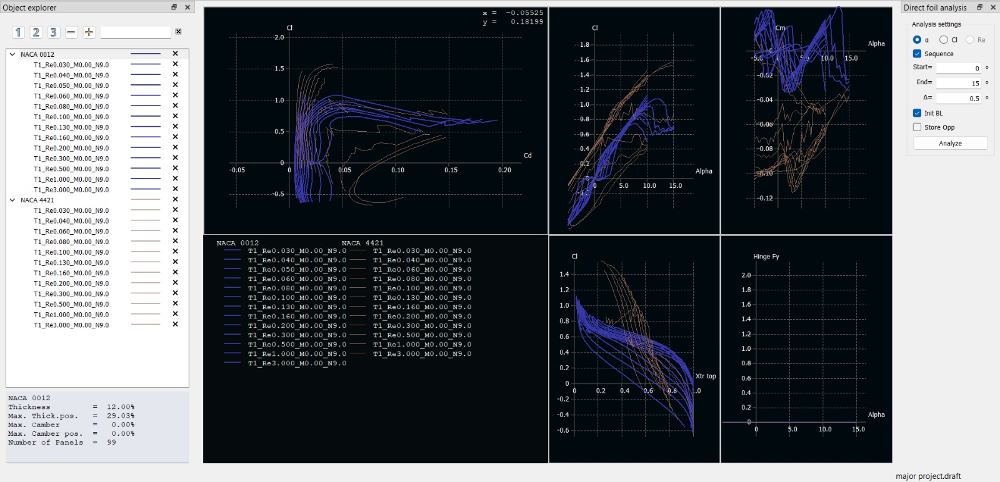
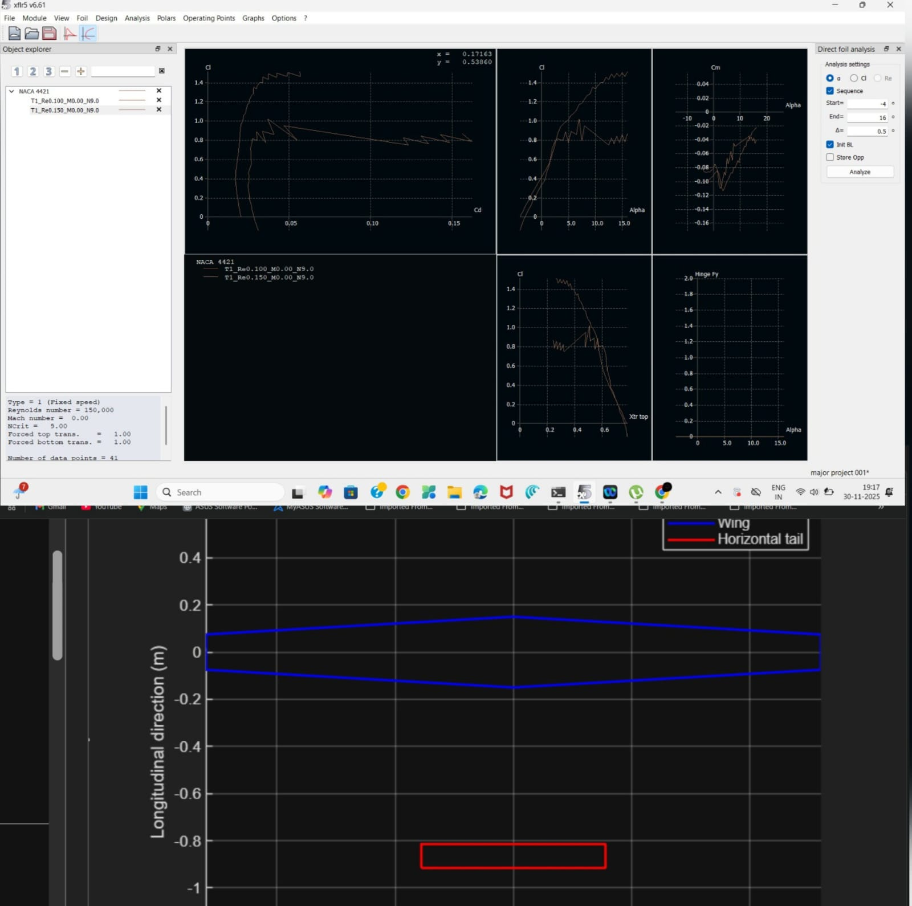
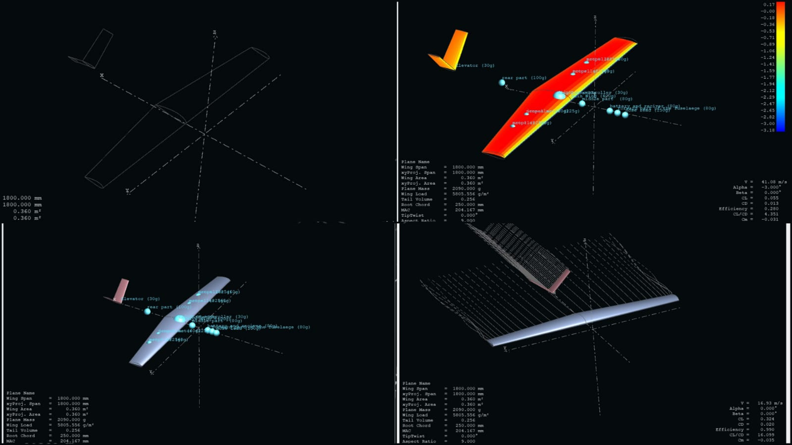
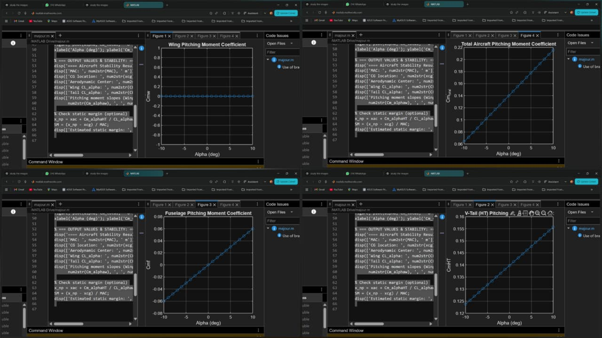
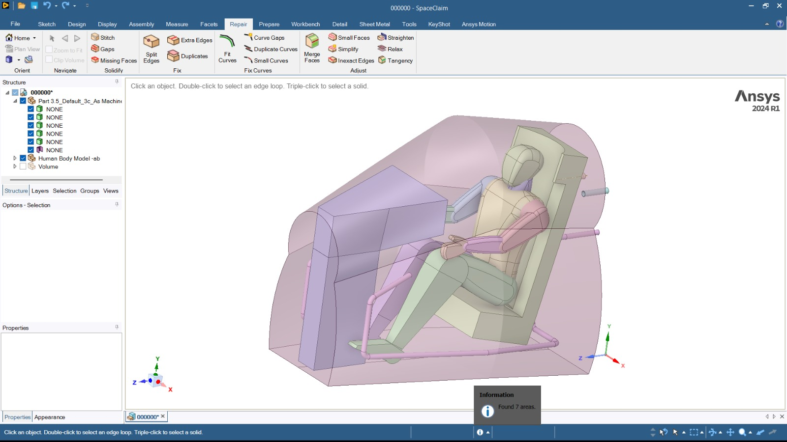
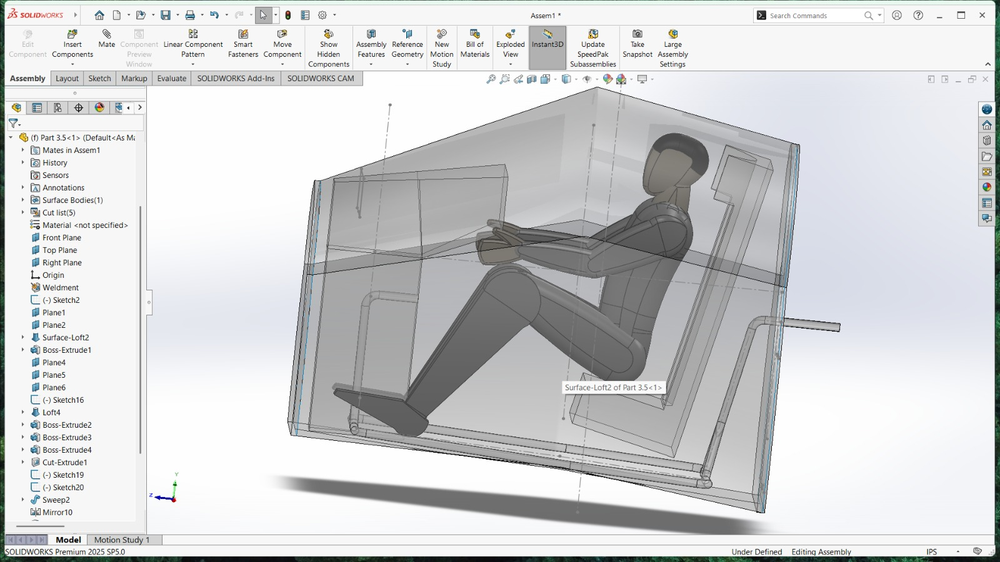
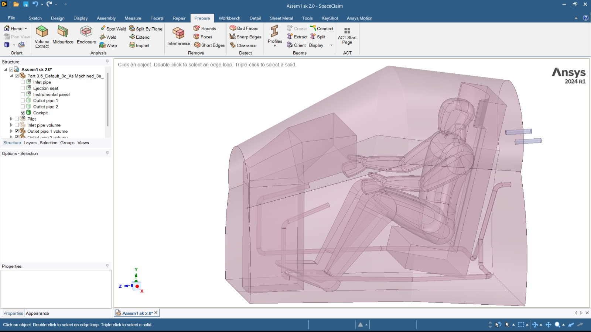
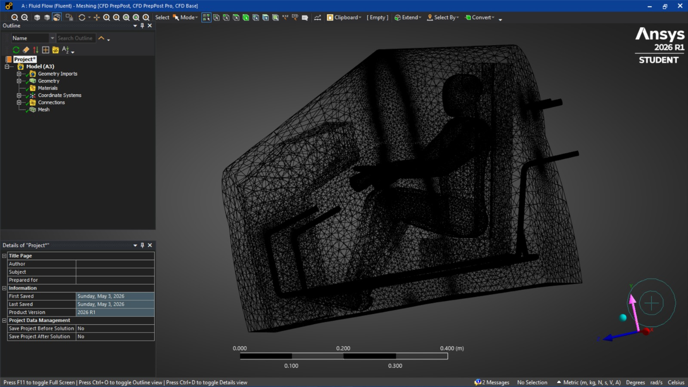

SK / AEROSPACE ENGINEERINGX +000 · Y +000SCROLL TO EXPLORE ↓
A LITTLE ABOUT ME —
Engineering with purpose & precision.
I’m an Aeronautical Engineering graduate with hands-on experience turning technical ideas into practical designs.
My work spans aircraft systems, aerodynamic design, UAV and VTOL concepts, simulation-led validation, manufacturing, and quality workflows. I use SolidWorks and CATIA V5 for 3D design, with ANSYS, SpaceClaim, Patran, Nastran, XFLR5, OpenVSP, and MATLAB across analysis and computation.
Composite repair and manufacturing work, four rapid-prototyped models, and introductory NDT experience.
06
DESIGN · AERODYNAMICS · CAD
Foldable-Wing VTOL UAV
A concept developed through aerodynamic evaluation, centre-of-gravity positioning, MATLAB-based stability calculations, and a final SolidWorks assembly. The images show the design and analysis workflow.
XFLR5MATLABSolidWorks
01 / AERODYNAMIC EVALUATION
Airfoil performance in XFLR5
Compared airfoil polars across Reynolds-number cases, reviewing lift, drag, pitching-moment, and lift-to-drag trends to inform the wing design.

Airfoil polar comparison · XFLR5

NACA 4421 polars · XFLR5
02 / CONFIGURATION
Centre-of-gravity positioning
Used XFLR5 to review the aircraft configuration and position the centre of gravity relative to the lifting surfaces and component mass locations.

Aircraft configuration and mass layout · XFLR5
03 / STABILITY CALCULATIONS
Cm, Cd, and stability plots in MATLAB
MATLAB was used for pitching-moment coefficient (Cm), drag coefficient (Cd), and related aircraft stability calculations. The supplied plots show component and total pitching-moment trends across angle of attack.

Component and total pitching-moment coefficient trends · MATLAB
04 / FINAL CAD MODEL
Foldable-wing assembly in SolidWorks
The final stage presents the SolidWorks UAV model, showing the aircraft configuration and folding-wing mechanism from multiple views.
Final aircraft CAD model · SolidWorks
INDEPENDENT ACADEMIC PROJECT · 2025
Gas Turbine Blade CFD and Thermal Stress
Modeled a gas-turbine blade in SolidWorks and CATIA V5, then conducted CFD and coupled thermal-structural simulation in ANSYS 2024 R2. Reviewed velocity, pressure, and deformation results for the blade model.
Gas turbine blade model and analysis · ANSYS
INTERNSHIP PROJECT · AIRCRAFT SYSTEMS · 2026
Military Cockpit Design
From cockpit CAD to flow analysis: a scaled fighter-aircraft environmental control system model was developed and prepared for CFD. The work examined airflow inlets and thermal performance across altitude conditions.
SolidWorksSpaceClaimANSYS Fluentk-ε
01 / DESIGN
Cockpit assembly
The SolidWorks assembly brings together the cockpit structure, pilot seating position, instrument panel, and supporting components.
CAD assembly · SolidWorks
02 / GEOMETRY PREPARATION
Prepare the ECS model
The assembly was organized and prepared in SpaceClaim for simulation, including the cockpit components and inlet/outlet geometry.

Cockpit geometry overview · SpaceClaim

Transparent assembly view · SolidWorks
03 / VOLUME EXTRACTION
Isolate the airflow volume
The cockpit is enclosed by an extracted volume that represents the surrounding flow region for the simulation.

Extracted inlet and outlet volumes · SpaceClaim
04 / MESHING
Discretize the flow domain
The cockpit ECS geometry was meshed in ANSYS as the computational domain for the airflow study.

Flow-domain mesh · ANSYS
05 / CFD ANALYSIS
Review airflow and thermal behavior
CFD was run in ANSYS Fluent using the k-ε turbulence model. Velocity and temperature contours were reviewed across altitude conditions, with reference to MIL-E-18927E. The screenshots above document the CAD and meshing workflow.
FLOW FIELDVelocity contours
THERMAL REVIEWTemperature contours
REFERENCEMIL-E-18927E
PUBLICATION · ROBOTICS
Computer Vision-Based Robotic Hand for Medical Healthcare Applications
Chapter 12 in Transforming Healthcare, Taylor & Francis. Open DOI ↗
Robotic hand demonstration
IJRASET · NOVEMBER 2025
Emerging UAV Solutions for Precision Crop Management
Published in the International Journal for Research in Applied Science & Engineering Technology, Volume 13, Issue XI. The paper reviews UAV applications in precision agriculture, including crop monitoring, field mapping, weed and disease detection, and environmental monitoring. Sanoj K served as team lead.
Article first page · IJRASET, Volume 13, Issue XI · November 2025
DAUTYA AEROSPACE · 15 FEBRUARY—30 MAY 2023
Composite Repair & Prototyping
Worked on composite repair and manufacturing, produced four rapid-prototyped models, and gained introductory experience with non-destructive testing. The internship certificate image was not supplied.
TOOLS & CAPABILITIES —
What I Do
(04)
A practical toolkit for moving between design, analysis, and the realities of manufacturing.
⌘
01 / DESIGN
CAD & 3D Design
SolidWorksCATIA V5
Mechanical and aerospace geometry, assembly design, and 3D modeling.
↗
◉
02 / SIMULATION
CFD & FEA
ANSYS FluentPatranNastran
Simulation-led evaluation of flow, thermal behaviour, structures, and loads.
↗
⌁
03 / AERODYNAMICS
Aircraft Concepts
XFLR5OpenVSPMATLAB
Aerodynamic evaluation, UAV/VTOL concept development, and computation.
↗
⎔
04 / PRODUCTION
Manufacturing
CompositesRapid prototypingNDT basics
Exposure to composite repair, prototyping, assembly planning, and production workflows.
↗
WHERE I’VE LEARNED & BUILT —
Experience & Internships
Hands-on exposure across aircraft systems, structural design, overhaul, and aerospace manufacturing.
02—05 / 2026
AERONAUTICAL ENGINEERING INTERN
Military Cockpit Design
Modeled fighter-aircraft ECS baseline geometry, referenced MIL-E-18927E, prepared SpaceClaim geometry, and analyzed CFD thermal/acoustic performance across altitudes.
CAD: SolidWorks and CATIA V5. Analysis and aerodynamics: ANSYS Fluent, SpaceClaim, Patran, Nastran, XFLR5, and OpenVSP. Computation: MATLAB.
Was the VTOL UAV target endurance demonstrated in flight?+
No flight performance is claimed. The 60-minute endurance is a project target; the figures describe a design concept and preliminary analysis.
What did the Military Cockpit Design project involve?+
Scaled cockpit ECS geometry and airflow analysis in ANSYS Fluent, with velocity and temperature contour review across altitude conditions.
What can you share about this internship project?+
The project is presented at a high level with the supplied CAD preparation and meshing screenshots. No confidential report or detailed performance values are shown.
Where can I read your publications?+
The Taylor & Francis chapter is linked by DOI in Selected Work. The UAV crop-management paper appeared in IJRASET, Volume 13, Issue XI, November 2025.
HAVE A PROJECT OR OPPORTUNITY? —
Let’s Talk
I’m happy to connect about aeronautical engineering, design, analysis, and early-career opportunities.
Whether you have a question, a collaboration in mind, or simply want to say hello, I’d be glad to hear from you.